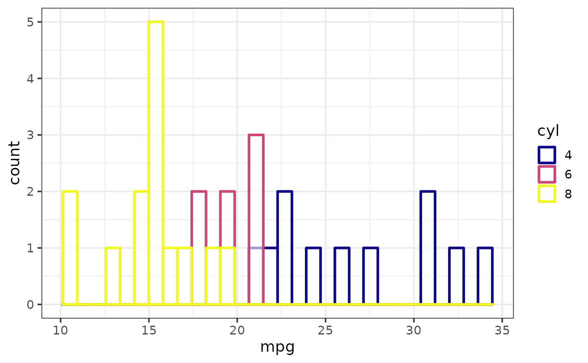
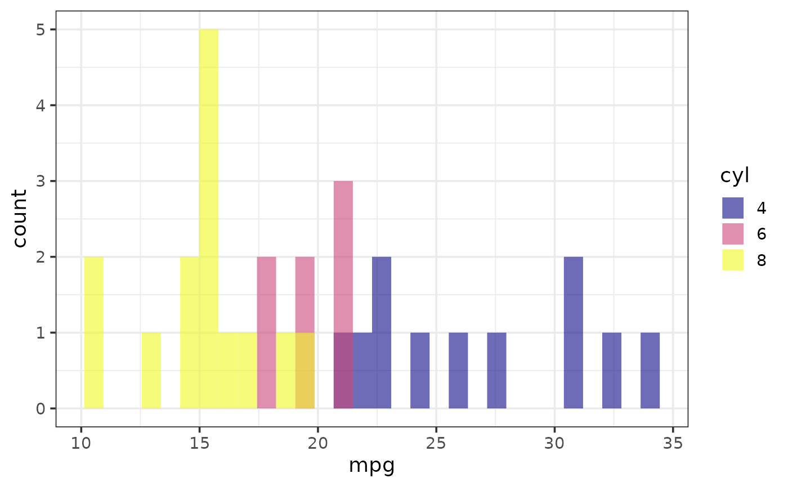
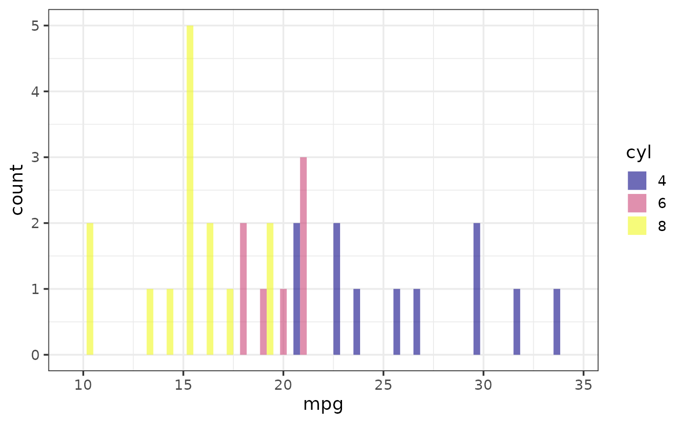
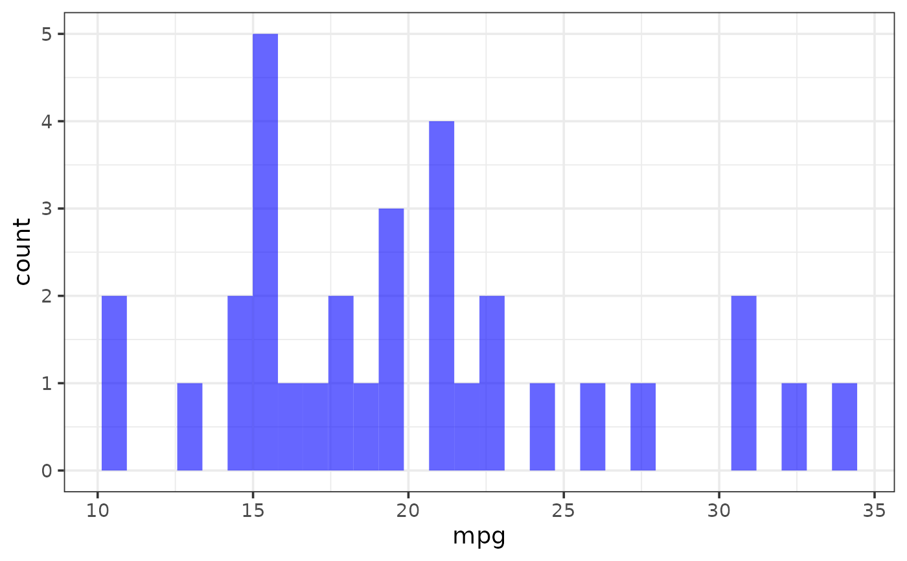
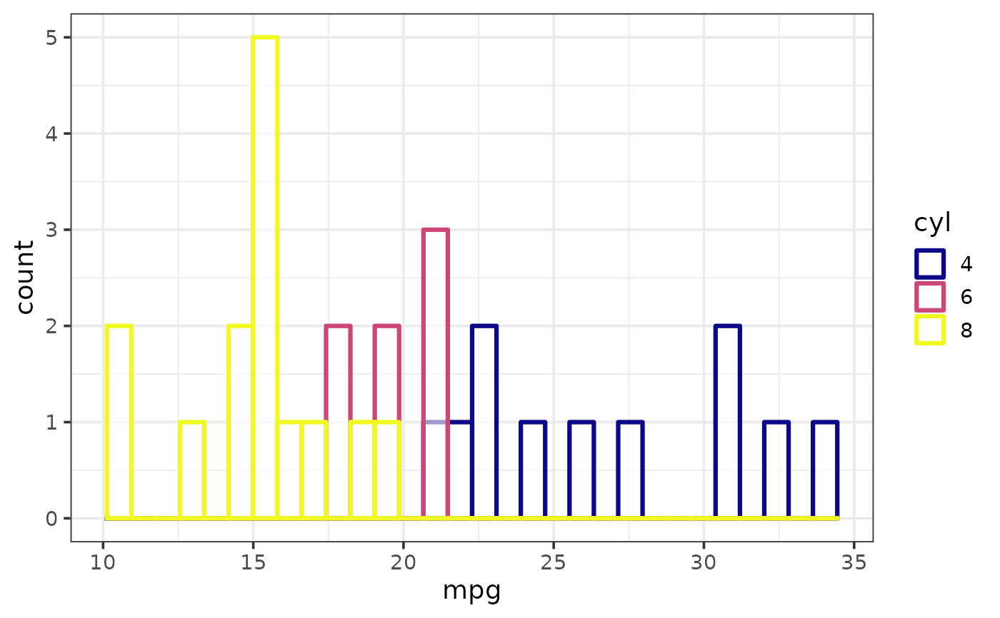
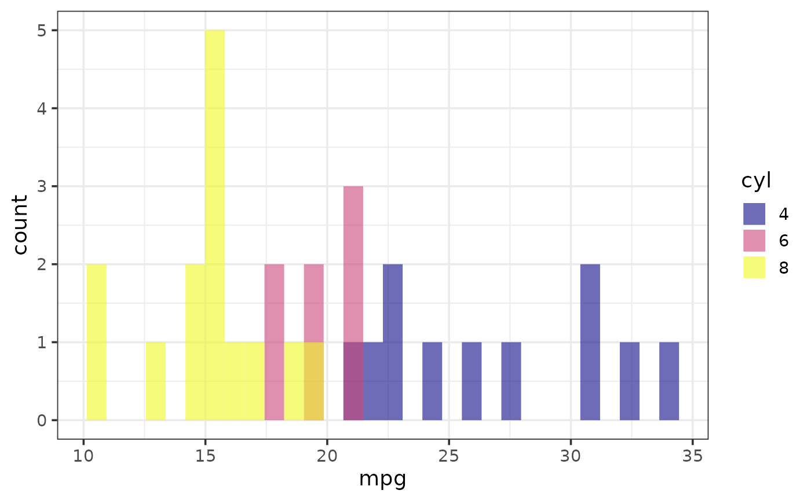
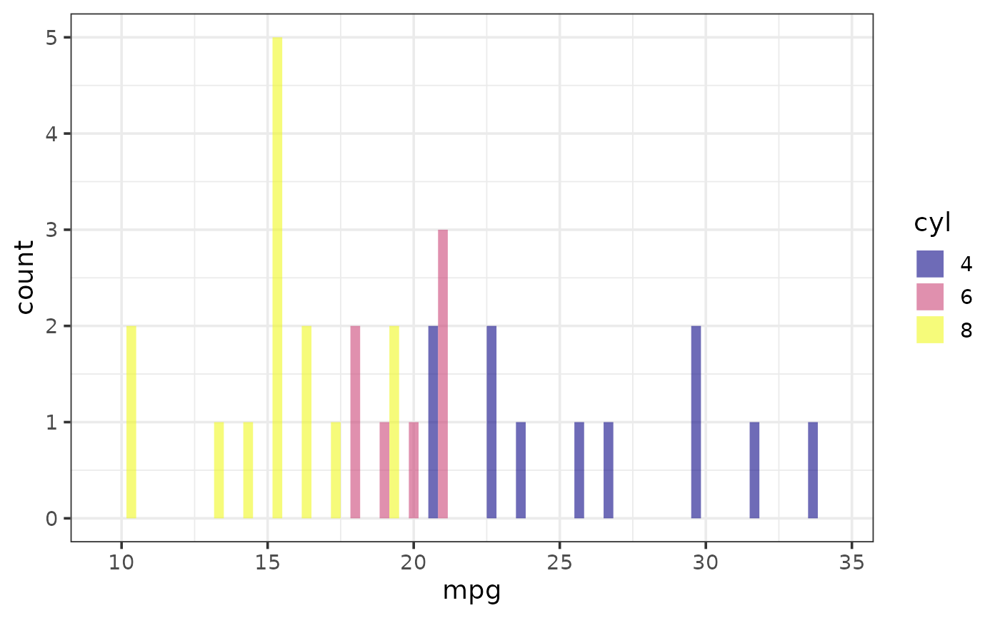
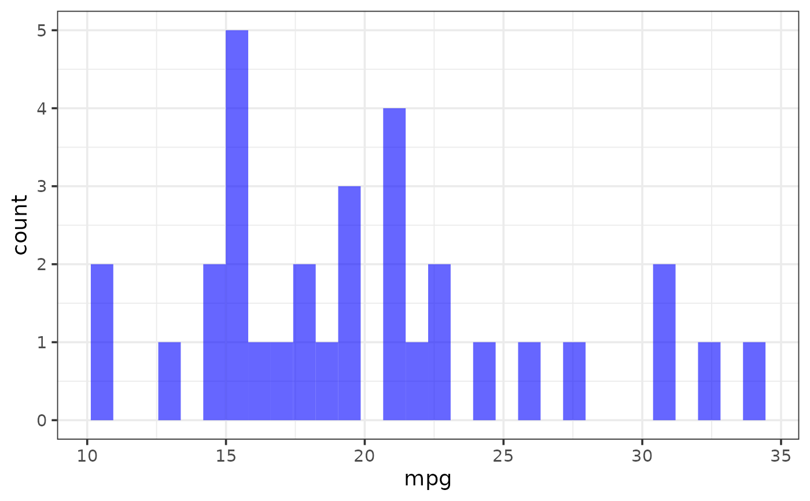

Easily generate a histogram of a variable using ggplot2 with a simplified customization interface for common modifications with static (ggplot) and interactive (plotly) output options. The static output is useful for producing static reports (e.g. for manuscripts) and is readily customized further using ggplot2 syntax. The interactive output is helpful for exploring the data and producing dynamic html reports. See this blog post for an introduction to ggplot2.
plot_histogram(
data,
x,
...,
binwidth = NULL,
bins = 30,
position = c("identity", "stack", "dodge"),
stat = c("bin", "count"),
na.rm = TRUE,
fill_var = NULL,
colour_var = NULL,
xlab = NULL,
ylab = NULL,
title = NULL,
title_hjust = 0.5,
caption = NULL,
caption_hjust = 0,
fill_var_title = NULL,
colour_var_title = NULL,
xlim = c(NA, NA),
xbreaks = ggplot2::waiver(),
transform_x = FALSE,
x_transformation = "log10",
x_var_labs = ggplot2::waiver(),
fill_var_order = NULL,
colour_var_order = NULL,
fill_var_labs = NULL,
colour_var_labs = NULL,
fill_var_values = NULL,
colour_var_values = NULL,
palette = c("plasma", "C", "magma", "A", "inferno", "B", "viridis", "D", "cividis",
"E"),
palette_direction = c("d2l", "l2d"),
palette_begin = 0,
palette_end = 1,
alpha = 0.6,
greyscale = FALSE,
line_size = 1.1,
rug = FALSE,
rug_colour = "black",
rug_alpha = 0.8,
dnorm = FALSE,
dnorm_colour = "black",
dnorm_line_type = c("dashed", "solid", "dotted", "dotdash", "longdash", "twodash"),
dnorm_line_size = 1.1,
dnorm_alpha = 0.6,
dnorm_y_axis = TRUE,
theme = c("bw", "classic", "grey", "light", "dark", "minimal"),
text_size = 14,
font = c("sans", "serif", "mono"),
facet_var = NULL,
facet_var_order = NULL,
facet_var_labs = NULL,
facet_var_strip_position = c("top", "bottom"),
facet_var_text_bold = TRUE,
legend_position = c("right", "left", "top", "bottom"),
omit_legend = FALSE,
interactive = FALSE,
aesthetic_options = FALSE
)Arguments
- data
A data frame or tibble containing the dependent measure "x" and any grouping variables.
- x
The name of a numeric variable you want a histogram of (quoted or unquoted), e.g. x = "variable" or x = variable.
- ...
graphical parameters (not associated with variables) to be passed to
geom_histogram, e.g. colour or fill, to be applied to all bars. To see some of the available options in a web browser, set the aesthetic_options argument to TRUE.- binwidth
Determines the aggregation level for bin construction in units of x. Default = 1.
- bins
Instead of specifying the binsize using binwidth, you can specify a total number of bins to display. If you choose to do so, set binwidth = NULL.
- position
Determines how bars are organized when a grouping variable is assigned to fill or colour. Valid options include "identity" (the default),"stack", and "dodge"
- stat
Determines how the y-axis is constructed. Typically one would not change this from the default of "bin" for a histogram, although "count" is another sensible option. See
stat_bin&stat_countfor details.- na.rm
If set to TRUE (the default), missing values will be omitted before plotting.
- fill_var
Use if you want to assign a variable to the histogram bar fill colour, e.g. fill_var = "grouping_variable" or fill_var = grouping_variable. Produces separate sets of bars for each level of the fill variable. See
aesfor details.- colour_var
Use if you want to assign a variable to the histogram bar outline colour, e.g. colour_var = "grouping_variable" or colour_var = grouping_variable. Produces separate sets of bars for each level of the colour variable. See
aesfor details.- xlab
Specify/overwrite the x-axis label using a character string, e.g. "x-axis label"
- ylab
Specify/overwrite the y-axis label using a character string, e.g. "y-axis label"
- title
Add a main title to the plot using a character string, e.g. "Distribution of X"
- title_hjust
Left-to-right/horizontal justification (alignment) of the main plot title. Accepts values from 0 (far left) to 1 (far right). Default is 0.5 (centre).
- caption
Add a figure caption to the bottom of the plot using a character string.
- caption_hjust
Left-to-right/horizontal justification (alignment) of the caption. Accepts values from 0 (far left) to 1 (far right). Default is 0 (left).
- fill_var_title
If a variable has been assigned to fill using fill_var, this allows you to modify the variable label in the plot legend.
- colour_var_title
If a variable has been assigned to colour using colour_var, this allows you to modify the variable label in the plot legend.
- xlim
Specify the x-axis limits, e.g. xlim = c(lower_limit, upper_limit). Use NA for the existing minimum or maximum value of x, e.g. the default is xlim = c(NA, NA).
- xbreaks
This allows you to change the break points to use for tick marks via a numeric vector.
seqis particularly useful here. Seescale_x_continuousfor details. If xbreaks is specified, then xlim should be also.- transform_x
Would you like to transform the x axis? (TRUE or FALSE)
- x_transformation
If transform_x = TRUE, this determines the transformation to be applied. Common choices include "log10" (the default), "log2", "sqrt", or "exp". See
scale_continuousfor details.- x_var_labs
Allows you to modify the labels displayed with the x-axis tick marks. See
scale_x_continuousfor details.- fill_var_order
If a variable has been assigned to fill using fill_var, this allows you to modify the order of the variable groups, e.g. fill_var = grouping_variable, fill_var_order = c("group_2", "group_1"). See
fct_relevelfor details.- colour_var_order
If a variable has been assigned to colour using colour_var, this allows you to modify the order of the variable groups, e.g. colour_var = grouping_variable, fill_var_order = c("group_2", "group_1"). See
fct_relevelfor details.- fill_var_labs
If a variable has been assigned to fill using fill_var, this allows you to modify the labels of the variable groups, e.g. fill_var = grouping_variable, fill_var_labs = c("group_1_new_label" = "group_1_old_label", "group_2_new_label" = "group_2_old_label"). See
fct_recodefor details.- colour_var_labs
If a variable has been assigned to colour using colour_var, this allows you to modify the labels of the variable groups, e.g. colour_var = grouping_variable, colour_var_labs = c("group_1_new_label" = "group_1_old_label", "group_2_new_label" = "group_2_old_label"). See
fct_recodefor details.- fill_var_values
If a variable has been assigned to fill using fill_var, this allows you to modify the colours assigned to the fill of each of the variable groups, e.g. fill_var = grouping_variable, fill_var_values = c("blue", "red"). See
scale_fill_manualfor details. For the colour options available in base R, seecolour_options.- colour_var_values
If a variable has been assigned to colour using colour_var, this allows you to modify the colours assigned to the outline of each of the variable groups, e.g. colour_var = grouping_variable, colour_var_values = c("blue", "red"). See
scale_fill_manualfor details. For the colour options available in base R, seecolour_options.- palette
If a variable is assigned to fill_var or colour_var, this determines which viridis colour palette to use. Options include "plasma" or "C" (default), "magma" or "A", "inferno" or "B", "viridis" or "D", and "cividis" or "E". See this link for examples. You can override these colour palettes with fill_var_values or colour_var_values.
- palette_direction
Choose "d2l" for dark to light (default) or "l2d" for light to dark.
- palette_begin
Value between 0 and 1 that determines where along the full range of the chosen colour palette's spectrum to begin sampling colours. See
scale_fill_viridis_dfor details.- palette_end
Value between 0 and 1 that determines where along the full range of the chosen colour palette's spectrum to end sampling colours. See
scale_fill_viridis_dfor details.- alpha
This adjusts the transparency/opacity of the histogram(s), ranging from 0 = 100% transparent to 1 = 100% opaque.
- greyscale
Set to TRUE if you want the plot converted to greyscale.
- line_size
This modifies the thickness of the histogram bar outlines.
- rug
Set this to TRUE to add rug lines to the bottom of the plot.
- rug_colour
Determines the colour of the rug lines (if rug = TRUE).
- rug_alpha
This adjusts the transparency/opacity of the rug lines (if rug = TRUE) with valid values ranging from 0 = 100% transparent to 1 = 100% opaque.
- dnorm
Set this to TRUE to add a normal/Gaussian density curve to the plot. Ignored if x is a date vector or "transform_x" = TRUE.
- dnorm_colour
Determines the colour of the normal density curve (if dnorm = TRUE).
- dnorm_line_type
The type of line to use to draw the normal density curve (if dnorm = TRUE). Options include "dashed" (default), "solid", "dotted", "dotdash", "longdash", and "twodash".
- dnorm_line_size
Adjusts the thickness of the normal density curve (if dnorm = TRUE).
- dnorm_alpha
This adjusts the transparency/opacity of the normal density curve (if dnorm = TRUE) with valid values ranging from 0 = 100% transparent to 1 = 100% opaque.
- dnorm_y_axis
Set this to FALSE to omit the secondary y-axis that is drawn if dnorm = TRUE to show the scale for the normal density curve.
- theme
Adjusts the theme using 1 of 6 predefined "complete" theme templates provided by ggplot2. Currently supported options are: "classic", "bw" (the elucidate default), "grey" (the ggplot2 default), "light", "dark", & "minimal". See
theme_bwfor more information.- text_size
This controls the size of all plot text. Default = 14.
- font
This controls the font of all plot text. Default = "sans" (Arial). Other options include "serif" (Times New Roman) and "mono" (Courier New).
- facet_var
Use if you want separate plots for each level of a grouping variable (i.e. a faceted plot), e.g. facet_var = "grouping_variable" or facet_var = grouping_variable. See
facet_wrapfor details.- facet_var_order
If a variable has been assigned for faceting using facet_var, this allows you to modify the order of the variable groups, e.g. facet_var = grouping_variable, facet_var_order = c("group_2", "group_1"). See
fct_relevelfor details.- facet_var_labs
If a variable has been assigned for faceting using facet_var, this allows you to modify the labels of the variable groups which will appear in the facet strips, e.g. facet_var = grouping_variable, facet_var_labs = c("group_1_new_label" = "group_1_old_label", "group_2_new_label" = "group_2_old_label"). See
fct_recodefor details.- facet_var_strip_position
If a variable has been assigned for faceting using facet_var, this allows you to modify the position of the facet strip labels. Sensible options include "top" (the default) or "bottom".
- facet_var_text_bold
If a variable has been assigned for faceting using facet_var, this allows you to use boldface (TRUE/default or FALSE) for the facet strip label text.
- legend_position
This allows you to modify the legend position. Options include "right" (the default), "left", "top", & "bottom".
- omit_legend
Set to TRUE if you want to remove/omit the legends.
- interactive
Determines whether a static ggplot object or an interactive html plotly object is returned. See
ggplotlyfor details.- aesthetic_options
If set to TRUE, opens a web browser to the tidyverse online aesthetic options vignette.
Value
A ggplot object or plotly object depending on whether static or interactive output was requested.
References
Wickham, H. (2016). ggplot2: elegant graphics for data analysis. New York, N.Y.: Springer-Verlag.
See also
Examples
data(mtcars) #load the mtcars data
plot_histogram(mtcars, x = mpg, fill = "blue")
 # \donttest{
plot_histogram(mtcars, x = mpg, fill = "blue")
# \donttest{
plot_histogram(mtcars, x = mpg, fill = "blue")
 plot_histogram(mtcars, x = mpg,
fill = "blue", colour = "black")
plot_histogram(mtcars, x = mpg,
colour_var = cyl, fill = "white")

plot_histogram(mtcars, x = mpg,
fill_var = cyl, position = "identity") #default in elucidate

plot_histogram(mtcars, x = mpg,
fill_var = cyl, position = "dodge", binwidth = 1)

plot_histogram(mtcars, x = mpg,
fill_var = cyl, position = "stack") #default in ggplot2
plot_histogram(mtcars, x = mpg,
fill = "blue", binwidth = 5)
plot_histogram(mtcars, x = mpg,
fill = "blue", binwidth = NULL, bins = 30) #default in ggplot2

plot_histogram(mtcars, x = mpg,
fill = "blue", interactive = TRUE)
plot_histogram(mtcars, x = mpg,
fill_var = cyl, binwidth = 5, interactive = TRUE)
# }
plot_histogram(mtcars, x = mpg,
fill = "blue", colour = "black")
plot_histogram(mtcars, x = mpg,
colour_var = cyl, fill = "white")

plot_histogram(mtcars, x = mpg,
fill_var = cyl, position = "identity") #default in elucidate

plot_histogram(mtcars, x = mpg,
fill_var = cyl, position = "dodge", binwidth = 1)

plot_histogram(mtcars, x = mpg,
fill_var = cyl, position = "stack") #default in ggplot2
plot_histogram(mtcars, x = mpg,
fill = "blue", binwidth = 5)
plot_histogram(mtcars, x = mpg,
fill = "blue", binwidth = NULL, bins = 30) #default in ggplot2

plot_histogram(mtcars, x = mpg,
fill = "blue", interactive = TRUE)
plot_histogram(mtcars, x = mpg,
fill_var = cyl, binwidth = 5, interactive = TRUE)
# }